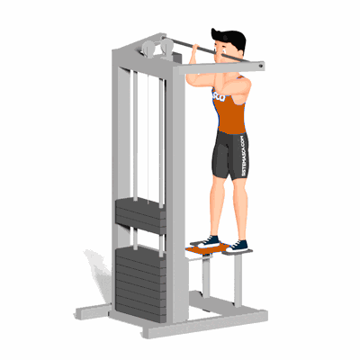

Glúteo no Graviton

Esse exercício trabalha o glúteo e com a extensão da perna é solicita também os músculos extensores do joelho (reto femoral, vasto medial, vasto lateral e vasto intermédio).
Ficha Técnica
Tipo: Musculação
Grupo Muscular: Glúteo
Aparelho: Nenhum
Músculos: Nenhum
Como realizar
- De frente com o Graviton, posicione um dos pés na plataforma do aparelho e estenda a perna levando a plataforma na altura do seu outro pé, esse entretanto deve ficar no apoio lateral do aparelho;
- Segure com as mãos na barra do aparelho e mantenha a coluna reta;
- Realize a flexão do joelho e do quadril até um pouco acima da linha da cintura;
- Retorne a posição inicial estendendo a perna, depois repita os movimentos.
 RC STORE
RC STORE